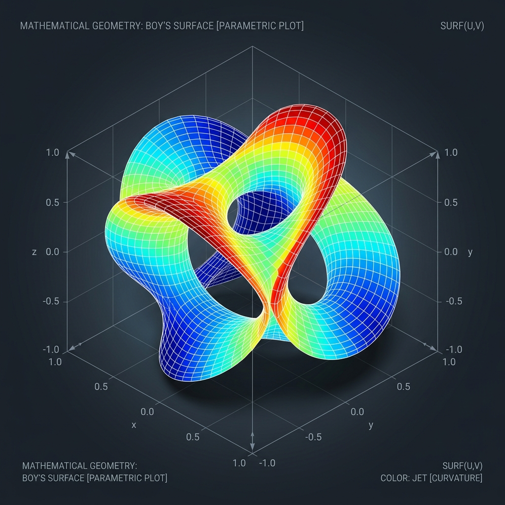
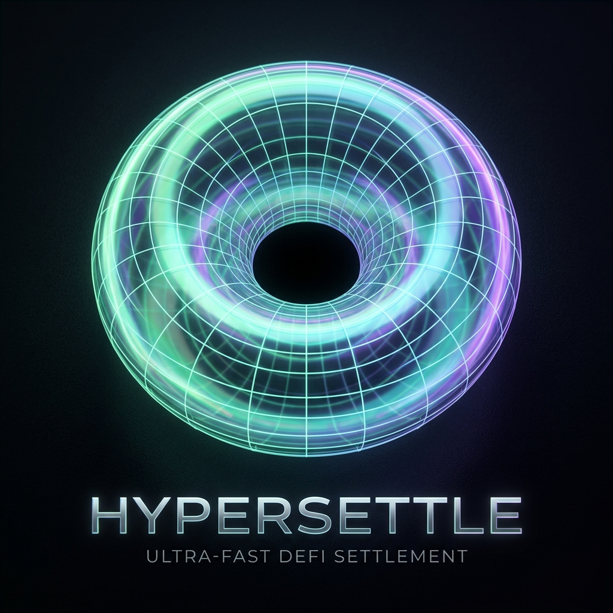
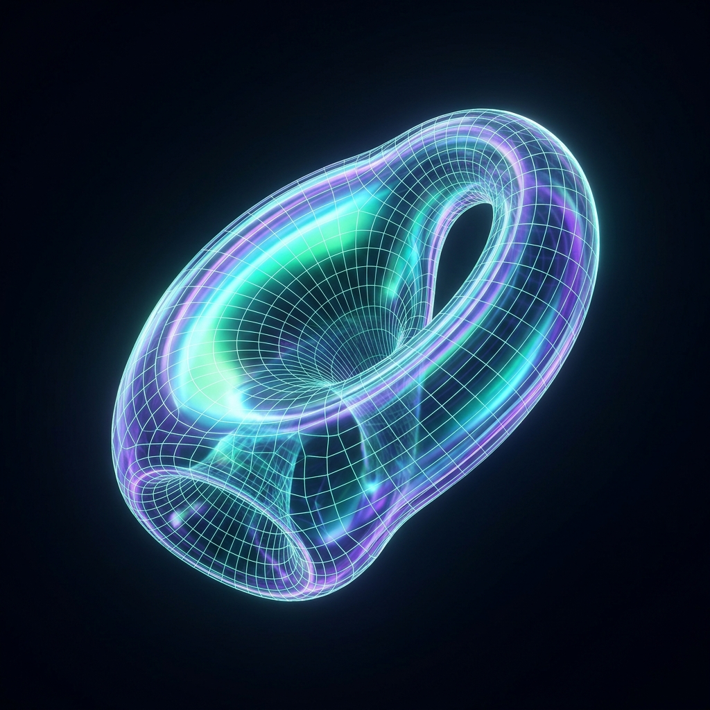
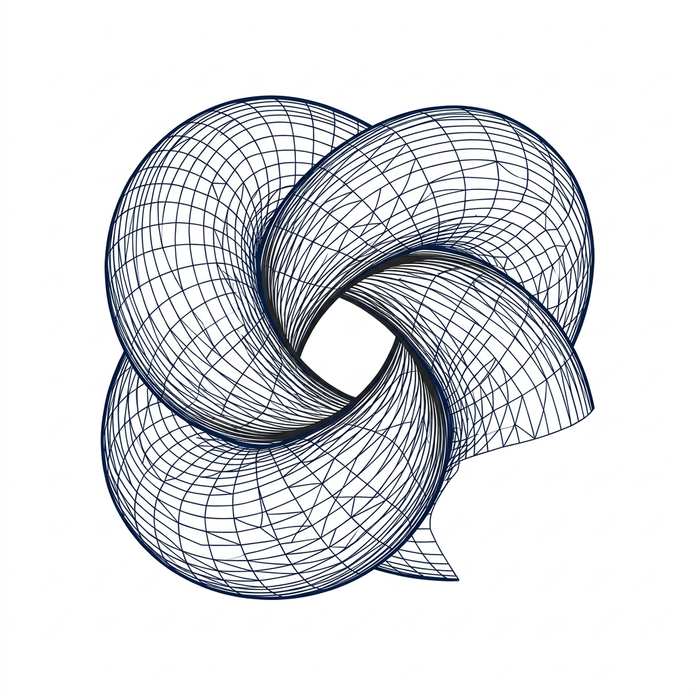
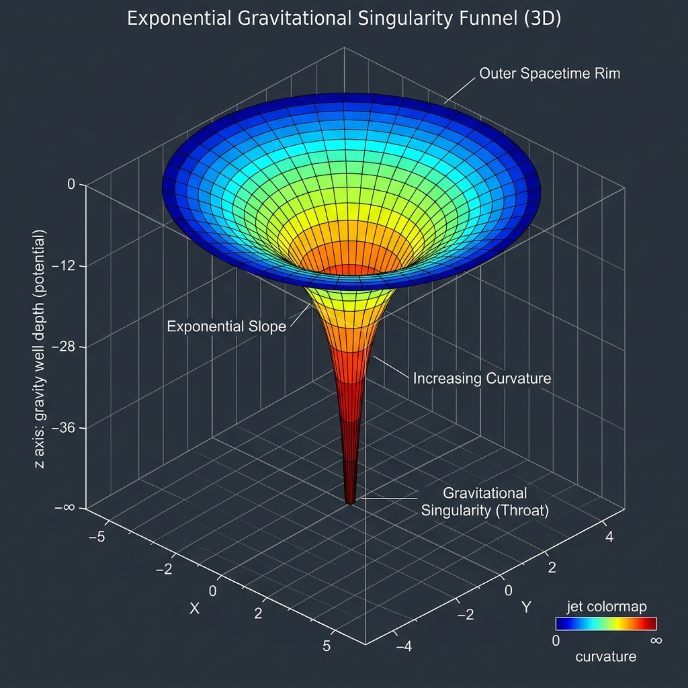
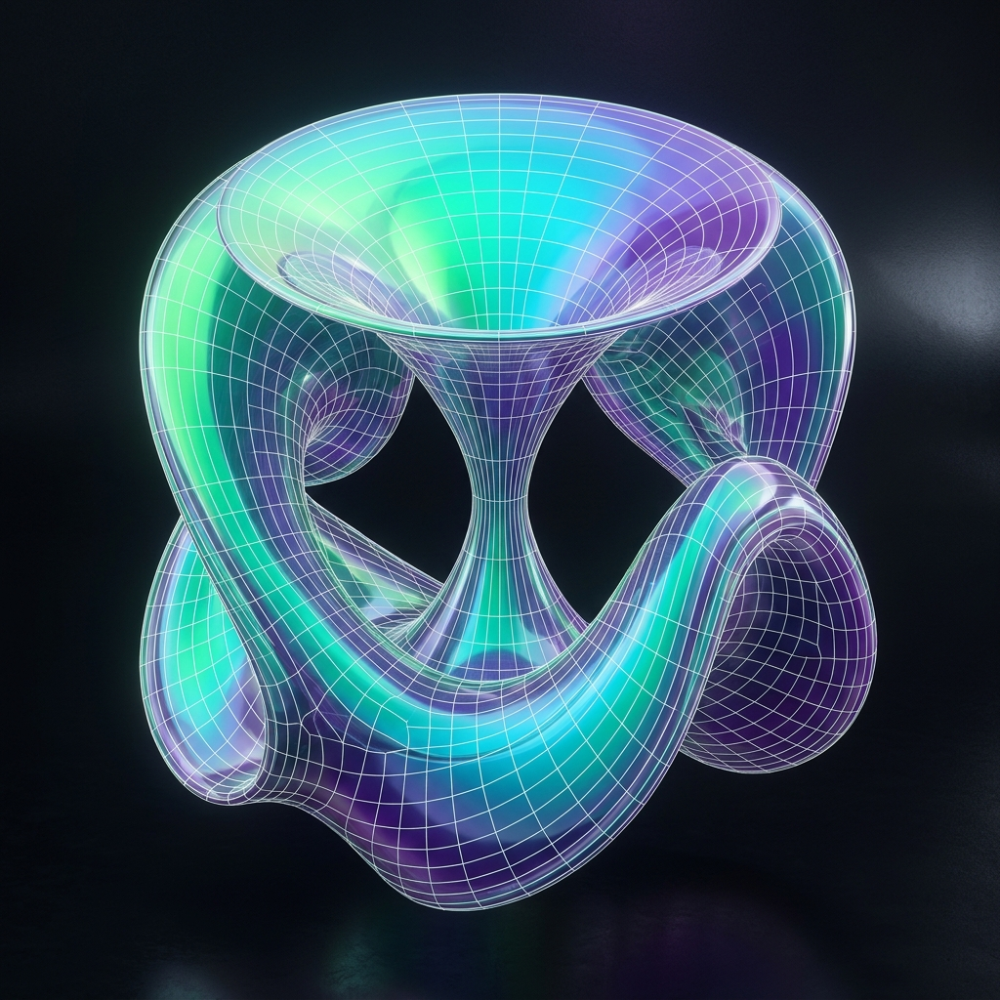
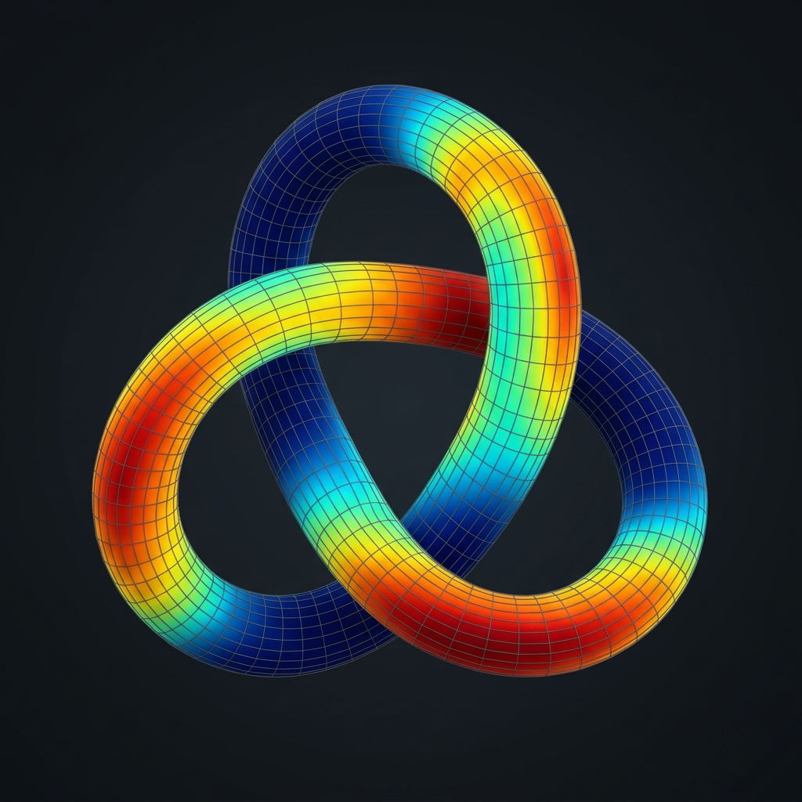
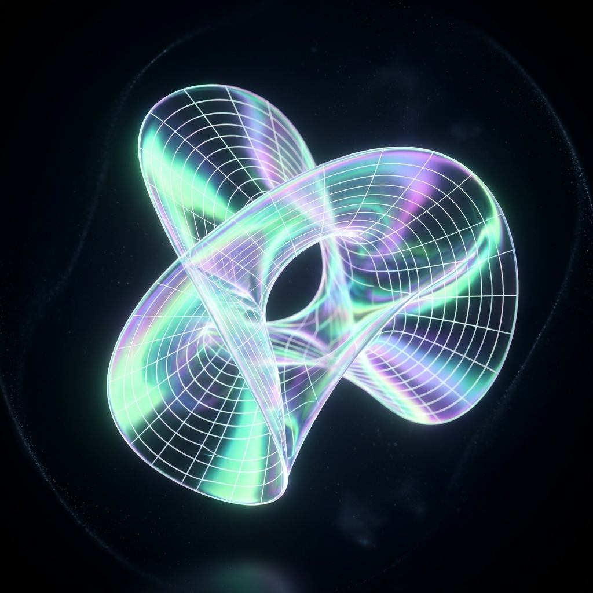
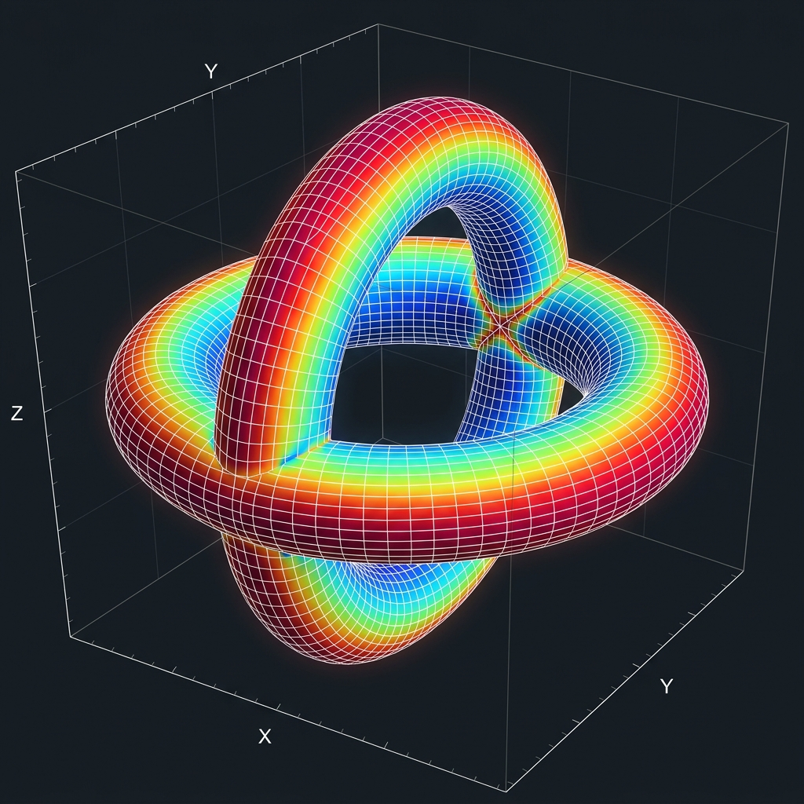
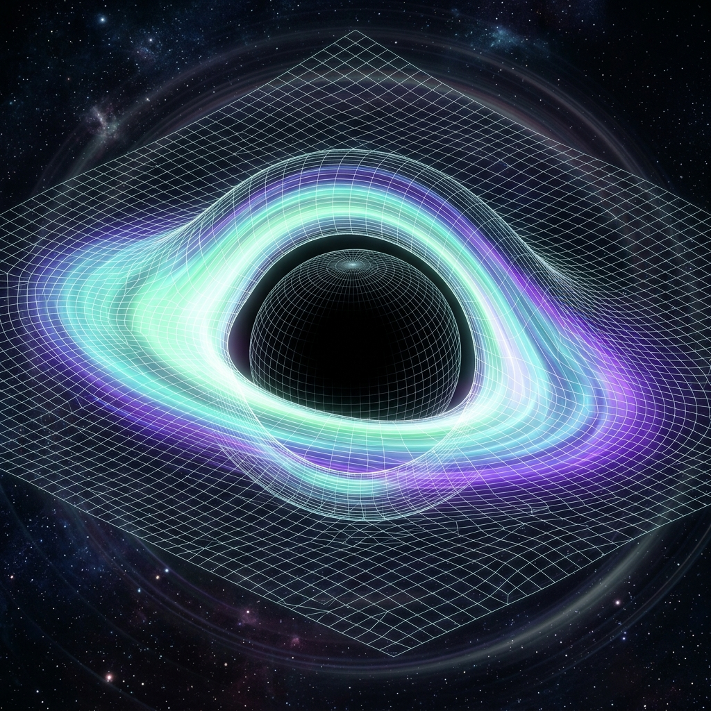

A complementary generative image method capturing the exact visual fidelity of Curve Finance's mathematical wireframe mesh, 33rd Tree Labs black hole singularities, and Matplotlib differential geometry 3D plots.









